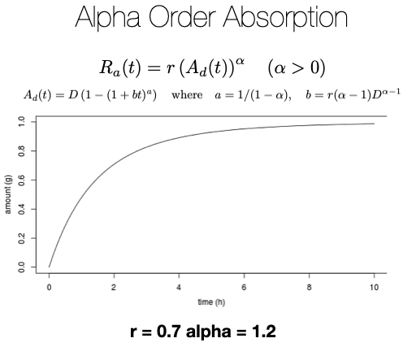
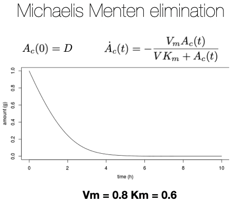

The ADME process
Absorption
For alpha order absorption, Ra(t), the rate of absorption at time t (in g/h for instance) is proportional to Ad(t), the amount of drug in the depot compartment.
Elimination
For Michaelis Menten elimination, the ODE relates the rate of reaction and the drug concentration Ac(t). A maximum rate of reaction (Vm) is reached when drug conc. achieves 100% enzyme saturation. Beyond this concentration, clearance will be zero-order.
